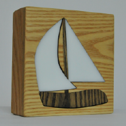

You are now in possession of a Community Boating Art Piece.

Instructions to connect your device to the internet.
- Plug in device to power, Sails should breathe Green for 20 seconds while it tries to connect to a WiFi Network
- After the 20 seconds, device will breathe Blue, signifying ‘Listening Mode’
- Connect your computer/phone to a local WiFi network named ‘Photon-XXXX’ where the XXXX are four alphanumeric characters
- Once you are connected, navigate a web browser to 192.168.0.1 (where you would normally type a website).
- Follow steps on web browser to connect Device to wifi.
For more information on connecting to WiFi networks, click here
If you have any questions or you just want to say hi, email me at swoolfdesign@gmail.com
Enjoy,
Sam
Header photo © CBI 2013
Icon photo © Sam Woolf 2017